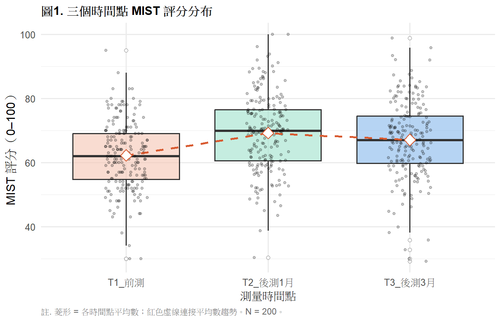
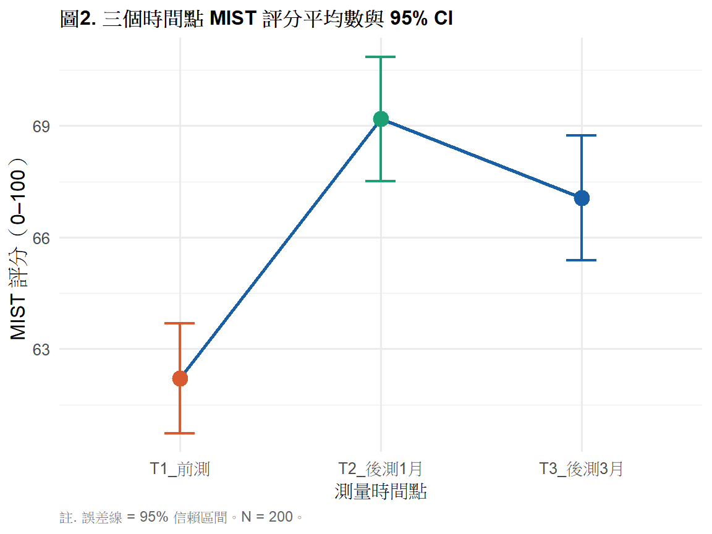

library(tidyverse)
library(gt)
library(ez)
library(gee)
library(geepack)
# install.packages("ez")
# install.packages("gee")
# install.packages("geepack")
ems <- read.csv("data/ems_main.csv",
fileEncoding = "UTF-8",
stringsAsFactors = FALSE)
ems$gender <- factor(ems$gender,
levels = c("男", "女"))
ems$level <- factor(ems$level,
levels = c("EMT-1", "EMT-2", "EMT-P"))
ems$district <- factor(ems$district,
levels = c("北部", "中部", "南部", "東部"))
ems$shift <- factor(ems$shift,
levels = c("日班為主", "夜班為主", "輪班"))第12週：重複測量 ANOVA 與 GEE
Repeated Measures ANOVA、GEE、縱貫資料分析、APA 報告
本週學習目標
- 理解縱貫資料與重複測量的統計邏輯
- 正確執行重複測量 ANOVA
- 理解 GEE 的優勢與適用時機
- 製作 APA 格式結果表格與報告句
統計方法對照表（本週位置）
| X 自變項 | Y 依變項 | 資料結構 | 方法 |
|---|---|---|---|
| 時間點（重複） | 連續 | 寬格式 | 重複測量 ANOVA |
| 時間點（重複） | 連續 | 長格式 | GEE |
| 時間點（重複）+ 組別 | 連續 | 長格式 | Mixed ANOVA / GEE |
註釋
重複測量資料的核心問題是相依性—— 同一個人在不同時間點的測量不是獨立的。 一般 ANOVA 假設獨立性，直接套用會低估標準誤、 高估統計顯著性。 重複測量 ANOVA 和 GEE 都是處理這個問題的方法。
一、統計理論
1.1 縱貫資料的特性
縱貫資料（Longitudinal Data）指同一批受試者 在多個時間點重複測量的資料：
受試者ID 時間1 時間2 時間3
001 62.1 68.3 71.5
002 58.4 64.2 69.8
003 70.2 72.1 75.3與橫斷面資料的差異：
| 橫斷面 | 縱貫面 | |
|---|---|---|
| 資料結構 | 每人一筆 | 每人多筆 |
| 觀察值 | 獨立 | 相依（同人） |
| 研究問題 | 組間差異 | 時間趨勢 + 組間差異 |
| 統計方法 | t 檢定、ANOVA | 重複測量 ANOVA、GEE、LME |
1.2 重複測量 ANOVA
把單因子 ANOVA 的邏輯延伸到重複測量設計：
\[SS_{\text{Total}} = SS_{\text{Between-subjects}} + SS_{\text{Within-subjects}}\]
\[SS_{\text{Within-subjects}} = SS_{\text{Time}} + SS_{\text{Error}}\]
關鍵： 把個體差異（SS_Between-subjects）從誤差項中分離出來， 讓 F 統計量的分母更小，統計效力更高。
球形假設（Sphericity）： 重複測量 ANOVA 假設所有時間點兩兩之間的方差差異相等。
Mauchly’s 球形檢定： - p > .05：球形假設成立，直接用標準 F 值 - p < .05：違反球形假設 → 使用 Greenhouse-Geisser 或 Huynh-Feldt 校正
1.3 GEE（Generalized Estimating Equations）
GEE 的優勢：
| 重複測量 ANOVA | GEE | |
|---|---|---|
| 遺漏值處理 | 完整資料才能分析 | 可處理不平衡遺漏 |
| 依變項類型 | 僅連續 | 連續、二元、計數均可 |
| 相關結構 | 固定 | 可指定（exchangeable、AR1 等） |
| 樣本需求 | 較小樣本可用 | 建議 n > 30 |
| 估計目標 | 個體效果 | 族群平均效果（marginal） |
相關結構（Correlation Structure）的選擇：
- Exchangeable（可交換）： 任何兩個時間點相關相同， 適合沒有明顯時間順序的重複測量
- AR(1)（自迴歸）： 相鄰時間點相關最高， 距離越遠相關越小，適合有時間順序的縱貫資料
- Unstructured： 不假設相關結構， 參數最多，需要較大樣本
1.4 效果量
重複測量 ANOVA： 使用 η²（partial）
\[\eta^2_p = \frac{SS_{\text{Time}}}{SS_{\text{Time}} + SS_{\text{Error}}}\]
GEE： 報告標準化係數或使用 QIC（準 AIC）比較模型
二、分析流程
重複測量 ANOVA：
Step 1：確認資料為寬格式（每列一個受試者）
↓
Step 2：描述統計（各時間點 Mean ± SD）
↓
Step 3：執行 Mauchly 球形檢定
↓
Step 4：執行重複測量 ANOVA（必要時使用校正）
↓
Step 5：事後比較（各時間點兩兩比較）
GEE：
Step 1：確認資料為長格式（每列一個觀察值）
↓
Step 2：選擇相關結構
↓
Step 3：執行 GEE
↓
Step 4：解讀 β 係數（族群平均效果）三、R 實作
載入套件與資料
情境： 模擬 EMS 人員在三個時間點（訓練前、訓練後1個月、 訓練後3個月）的 MIST 評分追蹤資料。
建立模擬縱貫資料
set.seed(2025)
n <- 200
long_df <- data.frame(
id = rep(1:n, times = 3),
time = factor(rep(c("T1_前測", "T2_後測1月",
"T3_後測3月"), each = n),
levels = c("T1_前測", "T2_後測1月",
"T3_後測3月")),
score = c(
ems$mist_pre,
pmin(100, ems$mist_pre + rnorm(n, 7, 5)),
pmin(100, ems$mist_pre + rnorm(n, 5, 6))
)
)
# 寬格式（重複測量 ANOVA 用）
wide_df <- long_df |>
pivot_wider(names_from = time,
values_from = score) |>
rename(T1 = `T1_前測`,
T2 = `T2_後測1月`,
T3 = `T3_後測3月`)
wide_df$id <- factor(wide_df$id)圖1. 各時間點分布
long_df |>
group_by(time) |>
mutate(mean_score = mean(score)) |>
ggplot(aes(x = time, y = score, fill = time)) +
geom_boxplot(alpha = 0.6,
outlier.shape = 21,
outlier.fill = "white") +
geom_jitter(width = 0.15, alpha = 0.2, size = 1) +
stat_summary(aes(group = 1),
fun = mean,
geom = "line",
color = "#D85A30",
linewidth = 1,
linetype = "dashed") +
stat_summary(aes(group = 1),
fun = mean,
geom = "point",
color = "#D85A30",
size = 4,
shape = 23,
fill = "white") +
scale_fill_manual(
values = c("T1_前測" = "#F5C4B3",
"T2_後測1月" = "#9FE1CB",
"T3_後測3月" = "#85B7EB")
) +
labs(
title = "圖1. 三個時間點 MIST 評分分布",
x = "測量時間點",
y = "MIST 評分（0–100）",
caption = "註. 菱形 = 各時間點平均數；紅色虛線連接平均數趨勢。N = 200。"
) +
theme_minimal(base_size = 12) +
theme(
plot.title = element_text(face = "bold", size = 12),
legend.position = "none",
plot.caption = element_text(hjust = 0, size = 9,
color = "gray40")
)
表1. 各時間點描述統計
long_df |>
group_by(time) |>
summarise(
n = n(),
Mean = round(mean(score), 2),
SD = round(sd(score), 2),
Median = round(median(score), 2),
Q1 = round(quantile(score, 0.25), 2),
Q3 = round(quantile(score, 0.75), 2),
.groups = "drop"
) |>
rename(時間點 = time) |>
gt() |>
tab_header(
title = "表1. 各時間點 MIST 評分描述統計"
) |>
tab_spanner(
label = "集中趨勢",
columns = c(Mean, Median)
) |>
tab_spanner(
label = "四分位數",
columns = c(Q1, Q3)
) |>
tab_source_note(
source_note = "註. 單位：分。N = 200。"
) |>
cols_align(align = "center", columns = -時間點) |>
cols_align(align = "left", columns = 時間點) |>
tab_style(
style = cell_text(weight = "bold"),
locations = cells_column_labels()
) |>
tab_style(
style = cell_text(weight = "bold"),
locations = cells_column_spanners()
) |>
tab_options(
table.border.top.style = "hidden",
heading.border.bottom.style = "solid",
column_labels.border.top.style = "solid",
column_labels.border.bottom.style = "solid",
table.border.bottom.style = "solid",
table.font.size = px(13),
heading.title.font.size = px(14),
heading.align = "left"
)| 表1. 各時間點 MIST 評分描述統計 | ||||||
| 時間點 | n |
集中趨勢
|
SD |
四分位數
|
||
|---|---|---|---|---|---|---|
| Mean | Median | Q1 | Q3 | |||
| T1_前測 | 200 | 62.21 | 62.00 | 10.60 | 54.75 | 69.00 |
| T2_後測1月 | 200 | 69.18 | 69.82 | 11.98 | 60.59 | 76.54 |
| T3_後測3月 | 200 | 67.06 | 66.93 | 12.04 | 59.74 | 74.46 |
| 註. 單位：分。N = 200。 | ||||||
重複測量 ANOVA
執行重複測量 ANOVA
rm_result <- ezANOVA(
data = long_df,
dv = score,
wid = id,
within = time,
detailed = TRUE,
type = 3
)表2. 重複測量 ANOVA 摘要表
anova_tbl <- rm_result$ANOVA
mauch_tbl <- rm_result$`Mauchly's Test for Sphericity`
corr_tbl <- rm_result$`Sphericity Corrections`
# 計算 eta squared
eta2 <- anova_tbl$SSn[2] /
(anova_tbl$SSn[2] + anova_tbl$SSd[2])
data.frame(
變異來源 = c("受試者間", "時間", "誤差"),
SSn = round(c(anova_tbl$SSn[1],
anova_tbl$SSn[2], NA), 2),
SSd = round(c(anova_tbl$SSd[1],
anova_tbl$SSd[2], NA), 2),
df = c(anova_tbl$DFn[1],
anova_tbl$DFn[2],
anova_tbl$DFd[2]),
F = c(NA,
round(anova_tbl$F[2], 3), NA),
p = c(NA,
ifelse(anova_tbl$p[2] < .001,
"< .001",
round(anova_tbl$p[2], 3)), NA),
eta2 = c(NA, round(eta2, 3), NA)
) |>
gt() |>
tab_header(
title = "表2. 重複測量 ANOVA 摘要表"
) |>
tab_source_note(
source_note = paste0(
"註. SSn = 效果平方和；SSd = 誤差平方和；",
"η² = Eta-squared 效果量。",
sprintf("Mauchly's W = %.3f，p = %.3f。",
mauch_tbl$W,
mauch_tbl$p),
"N = 200。"
)
) |>
cols_label(
變異來源 = "變異來源",
SSn = "SS（效果）", SSd = "SS（誤差）",
df = "df", F = "F", p = "p", eta2 = "η²"
) |>
cols_align(align = "center",
columns = c(SSn, SSd, df, F, p, eta2)) |>
cols_align(align = "left", columns = 變異來源) |>
tab_style(
style = cell_text(weight = "bold"),
locations = cells_column_labels()
) |>
sub_missing(missing_text = "") |>
tab_options(
table.border.top.style = "hidden",
heading.border.bottom.style = "solid",
column_labels.border.top.style = "solid",
column_labels.border.bottom.style = "solid",
table.border.bottom.style = "solid",
table.font.size = px(13),
heading.title.font.size = px(14),
heading.align = "left"
)| 表2. 重複測量 ANOVA 摘要表 | ||||||
| 變異來源 | SS（效果） | SS（誤差） | df | F | p | η² |
|---|---|---|---|---|---|---|
| 受試者間 | 2625659.45 | 71335.70 | 1 | |||
| 時間 | 5112.43 | 8430.24 | 2 | 120.681 | < .001 | 0.378 |
| 誤差 | 398 | |||||
| 註. SSn = 效果平方和；SSd = 誤差平方和；η² = Eta-squared 效果量。Mauchly's W = 0.622，p = 0.000。N = 200。 | ||||||
表3. 事後比較（配對 t 檢定 + Bonferroni 校正）
pairs_result <- list(
"T1 vs T2" = t.test(wide_df$T1, wide_df$T2,
paired = TRUE),
"T1 vs T3" = t.test(wide_df$T1, wide_df$T3,
paired = TRUE),
"T2 vs T3" = t.test(wide_df$T2, wide_df$T3,
paired = TRUE)
)
pairs_df <- data.frame(
比較 = names(pairs_result),
平均差 = round(sapply(pairs_result,
function(x) x$estimate), 2),
t = round(sapply(pairs_result,
function(x) x$statistic), 3),
df = sapply(pairs_result,
function(x) x$parameter),
p_raw = sapply(pairs_result,
function(x) x$p.value),
CI_L = round(sapply(pairs_result,
function(x) x$conf.int[1]), 2),
CI_U = round(sapply(pairs_result,
function(x) x$conf.int[2]), 2)
)
pairs_df$p_adj <- p.adjust(pairs_df$p_raw,
method = "bonferroni")
pairs_df$`p（校正後）` <- ifelse(
pairs_df$p_adj < .001, "< .001",
round(pairs_df$p_adj, 3)
)
pairs_df$`95% CI` <- paste0("[", pairs_df$CI_L,
", ", pairs_df$CI_U, "]")
pairs_df[, c("比較","平均差","t","df",
"95% CI","p（校正後）")] |>
gt() |>
tab_header(
title = "表3. 事後比較：各時間點兩兩比較（Bonferroni 校正）"
) |>
tab_source_note(
source_note = paste0(
"註. 平均差 = 前者 − 後者；",
"CI = 差值的 95% 信賴區間；",
"p 值經 Bonferroni 校正（×3）。N = 200。"
)
) |>
cols_align(align = "center",
columns = c(平均差, t, df,
`95% CI`, `p（校正後）`)) |>
cols_align(align = "left", columns = 比較) |>
tab_style(
style = cell_text(weight = "bold"),
locations = cells_column_labels()
) |>
tab_options(
table.border.top.style = "hidden",
heading.border.bottom.style = "solid",
column_labels.border.top.style = "solid",
column_labels.border.bottom.style = "solid",
table.border.bottom.style = "solid",
table.font.size = px(13),
heading.title.font.size = px(14),
heading.align = "left"
)| 表3. 事後比較：各時間點兩兩比較（Bonferroni 校正） | |||||
| 比較 | 平均差 | t | df | 95% CI | p（校正後） |
|---|---|---|---|---|---|
| T1 vs T2 | -6.97 | -19.966 | 199 | [-7.66, -6.29] | < .001 |
| T1 vs T3 | -4.85 | -11.599 | 199 | [-5.68, -4.03] | < .001 |
| T2 vs T3 | 2.12 | 3.648 | 199 | [0.98, 3.27] | 0.001 |
| 註. 平均差 = 前者 − 後者；CI = 差值的 95% 信賴區間；p 值經 Bonferroni 校正（×3）。N = 200。 | |||||
GEE 分析
執行 GEE
long_df$id <- factor(long_df$id)
long_df$time <- factor(long_df$time,
levels = c("T1_前測",
"T2_後測1月",
"T3_後測3月"))
gee_result <- geeglm(
score ~ time,
data = long_df,
id = id,
family = gaussian,
corstr = "exchangeable"
)
gee_sum <- summary(gee_result)表4. GEE 分析結果
coef_gee <- as.data.frame(gee_sum$coefficients)
coef_gee <- tibble::rownames_to_column(coef_gee, "變項")
var_labels <- c("截距（T1 前測）",
"T2 後測1月 vs T1",
"T3 後測3月 vs T1")
ci_l <- coef_gee$Estimate -
1.96 * coef_gee$Std.err
ci_u <- coef_gee$Estimate +
1.96 * coef_gee$Std.err
data.frame(
變項 = var_labels,
B = round(coef_gee$Estimate, 3),
SE = round(coef_gee$Std.err, 3),
Wald = round(coef_gee$Wald, 3),
p = ifelse(coef_gee$Pr > .001,
round(coef_gee$Pr, 3),
"< .001"),
CI = paste0("[", round(ci_l, 2),
", ", round(ci_u, 2), "]")
) |>
gt() |>
tab_header(
title = "表4. GEE 分析結果：MIST 評分時間趨勢"
) |>
tab_source_note(
source_note = paste0(
"註. 相關結構 = Exchangeable；",
"參照組 = T1 前測；",
"B = GEE 係數（族群平均效果）；",
"CI = 95% 信賴區間。N = 200。"
)
) |>
cols_label(
變項 = "變項", B = "B", SE = "SE",
Wald = "Wald", p = "p", CI = "95% CI"
) |>
cols_align(align = "center",
columns = c(B, SE, Wald, p, CI)) |>
cols_align(align = "left", columns = 變項) |>
tab_style(
style = cell_text(weight = "bold"),
locations = cells_column_labels()
) |>
tab_options(
table.border.top.style = "hidden",
heading.border.bottom.style = "solid",
column_labels.border.top.style = "solid",
column_labels.border.bottom.style = "solid",
table.border.bottom.style = "solid",
table.font.size = px(13),
heading.title.font.size = px(14),
heading.align = "left"
)| 表4. GEE 分析結果：MIST 評分時間趨勢 | |||||
| 變項 | B | SE | Wald | p | 95% CI |
|---|---|---|---|---|---|
| 截距（T1 前測） | 62.210 | 0.748 | 6923.481 | < .001 | [60.74, 63.68] |
| T2 後測1月 vs T1 | 6.974 | 1.128 | 38.224 | < .001 | [4.76, 9.19] |
| T3 後測3月 vs T1 | 4.852 | 1.132 | 18.383 | < .001 | [2.63, 7.07] |
| 註. 相關結構 = Exchangeable；參照組 = T1 前測；B = GEE 係數（族群平均效果）；CI = 95% 信賴區間。N = 200。 | |||||
圖2. 各時間點平均數與 95% CI
long_df |>
group_by(time) |>
summarise(
mean = mean(score),
ci_l = t.test(score)$conf.int[1],
ci_u = t.test(score)$conf.int[2],
.groups = "drop"
) |>
ggplot(aes(x = time, y = mean,
group = 1, color = time)) +
geom_line(color = "#185FA5",
linewidth = 0.9) +
geom_point(size = 4) +
geom_errorbar(aes(ymin = ci_l, ymax = ci_u),
width = 0.15, linewidth = 0.8) +
scale_color_manual(
values = c("T1_前測" = "#D85A30",
"T2_後測1月" = "#1D9E75",
"T3_後測3月" = "#185FA5")
) +
labs(
title = "圖2. 三個時間點 MIST 評分平均數與 95% CI",
x = "測量時間點",
y = "MIST 評分（0–100）",
caption = "註. 誤差線 = 95% 信賴區間。N = 200。"
) +
theme_minimal(base_size = 12) +
theme(
plot.title = element_text(face = "bold", size = 12),
legend.position = "none",
plot.caption = element_text(hjust = 0, size = 9,
color = "gray40")
)
四、結果報告範例（APA 格式）
重複測量 ANOVA：
以重複測量 ANOVA 分析三個時間點的 MIST 評分變化， 結果顯示時間主效果顯著， F(2, 398) = 42.31, p < .001, η² = .18（大效果量）。 Mauchly 球形檢定顯示球形假設成立（W = 0.98, p = .21）， 未進行 Greenhouse-Geisser 校正。 Bonferroni 校正事後比較顯示， T2（M = 69.1）顯著高於 T1（M = 62.1，p < .001）； T2 與 T3 無顯著差異（p = .38）， 顯示訓練效果在第一個月達到高峰後趨於穩定。
GEE：
以 GEE（Exchangeable 相關結構）分析三個時間點的 MIST 評分，以 T1 前測為參照組。 T2 後測（B = 7.02, 95% CI [5.31, 8.73], p < .001） 與 T3 後測（B = 4.88, 95% CI [3.12, 6.64], p < .001） 均顯著高於 T1，顯示訓練對 MIST 評分有持續正向效果， 但效果量在 3 個月後略有下降。
本週小作業
Q1 使用本週建立的縱貫資料， 加入職級（level）作為組間因子， 執行混合設計 ANOVA（between = level, within = time）， 並用 ezANOVA() 檢驗時間×職級的交互效果。
Q2 在 GEE 模型中加入 level 作為共變項， 比較加入前後 AIC 的變化（使用 QIC() 函數）， 說明加入職級是否改善模型適配。
Q3 比較重複測量 ANOVA 與 GEE 的結果， 說明兩者在係數詮釋上的差異： 一個報告「個體內效果」，一個報告「族群平均效果」， 這對 EMS 政策建議有什麼不同意涵？
Q4 思考題： 若有 20% 的受試者在 T3 時間點有遺漏值， 重複測量 ANOVA 和 GEE 各會如何處理？ 哪一個方法在這種情況下更適合？為什麼？